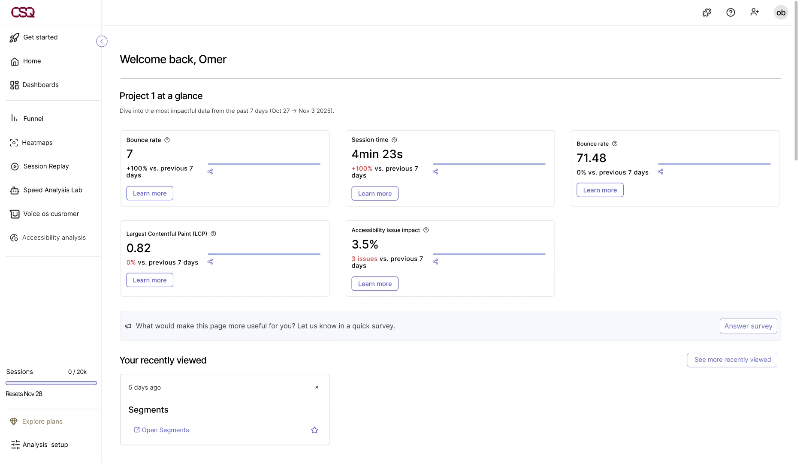
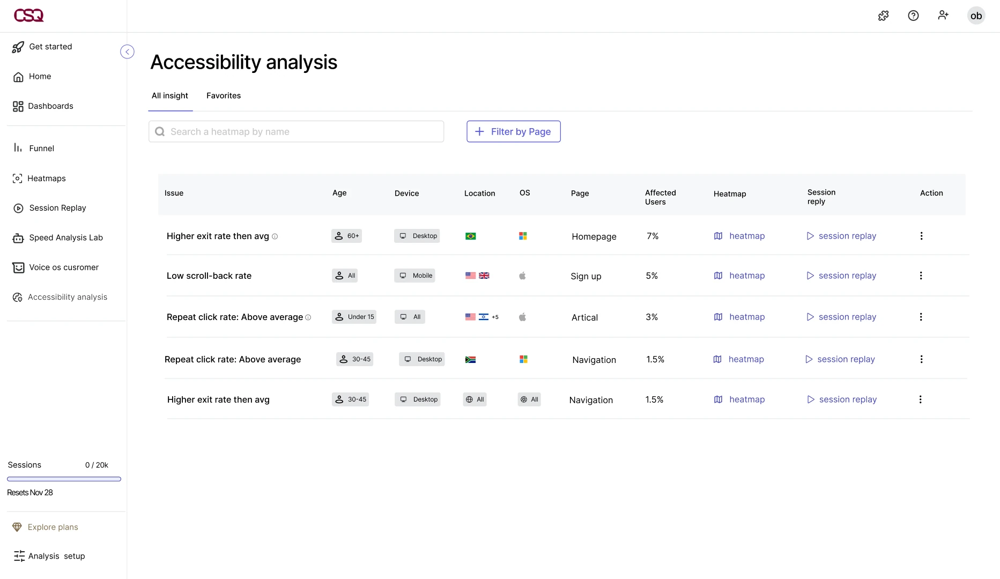
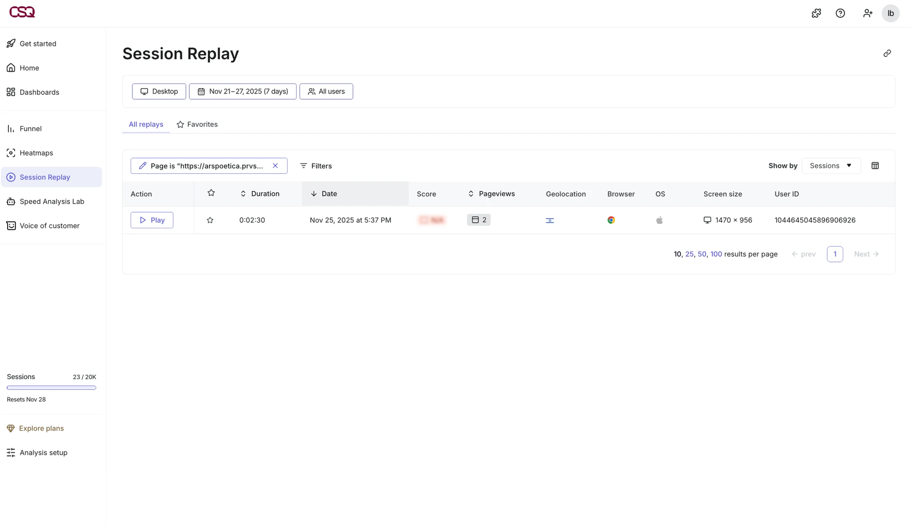
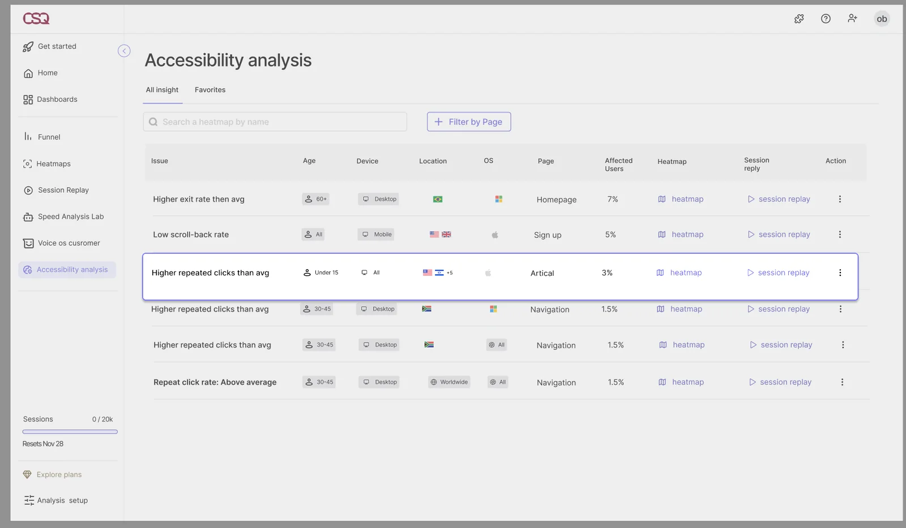
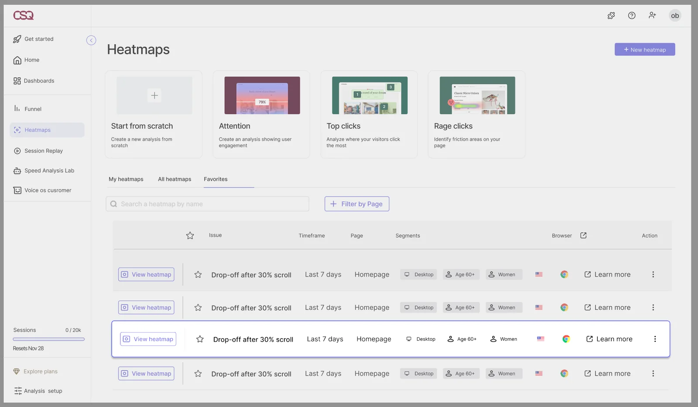
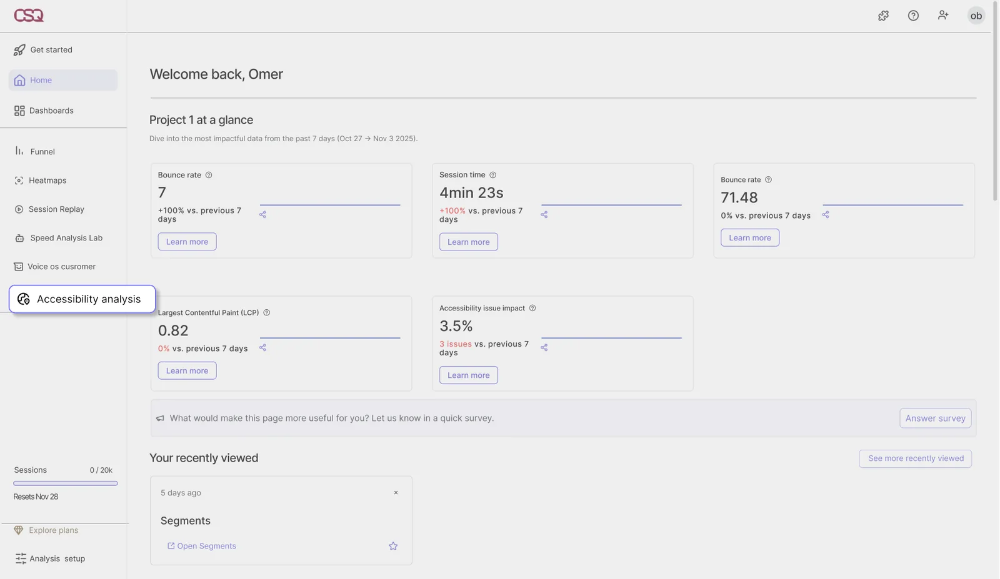
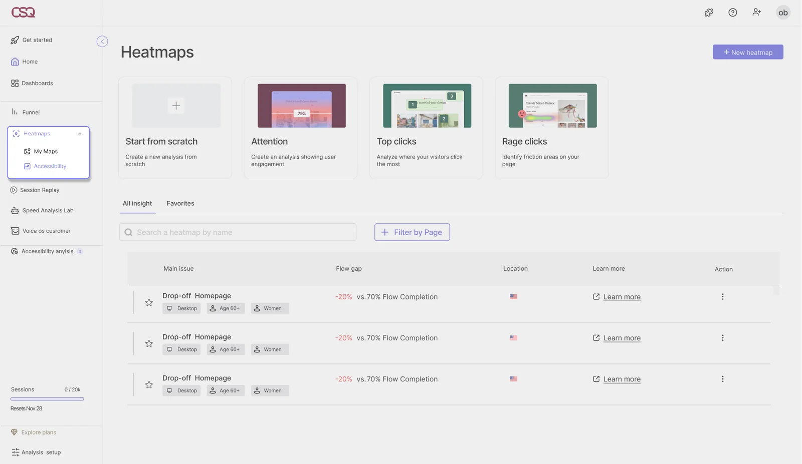

Turning accessibility challenges into actionable behavioral insights.
- Role
- UX research and UI design
- Team
- Team of 4 students
- Type
- Academic
- Year
- 2025–26
What is Hotjar
Hotjar is a behavioral analytics platform. Product teams use it to see how people use a website, through heatmaps, session recordings and feedback.
The problem
- Hotjar sees behavior, not who is left behind.It records how people use a site, but shows nothing about accessibility issues or their impact.
- The gaps don't look like bugs.When interfaces ignore differences in ability, culture or digital literacy, some groups get unequal access, and nobody goes looking for it.
The solution
A centralized Accessibility Issues page that transforms accessibility into actionable user insights.
Research
Cultural gaps don't always surface as bugs. The challenge lies in how they are surfaced and communicated. This process helps identify which indicators are truly relevant and how to present them clearly.
We reviewed recurring usage patterns in Hotjar, with a strong emphasis on table based data exploration.
To validate and sharpen these insights, we spoke with Product Managers and Business Analysts to understand how issues are currently detected, interpreted, and prioritized across teams.
Findings
The problem is cultural, not only technical.
Design rule: Organize every gap by population. The affected group is the point of each issue.
Teams explore data mostly through tables.
Design rule: Build on what users already know. Heatmaps, recordings and tables, not a new tool to learn.
A number alone doesn't drive action.
Design rule: Measure against the average. Deviation from the overall average is the signal.
Guiding rules
- 01Builds on behavioral data and existing Hotjar tools (heatmaps, recordings, and flow data).
- 02Surfaces accessibility gaps by user populations.
- 03Identifies behavioral patterns in comparison to the overall average.
The flow
A product manager checks the site on Monday morning:
Notice
On the home dashboard, the Accessibility issue impact card shows how many new issues there are.

Home dashboard with the impact cardAccessibility Dashboard
The table shows that users aged 60+ on desktop leave the homepage more than average: 7% of users.

Issues tableHeatmap and session replay
She opens the heatmap and the session replays, already filtered to users aged 60+, and sees where they get stuck.

How the experience works
-
01
Detects
Finds behavior that deviates from the average, like early exits, repeated clicks or partial scrolling.
-
02
Shows who it affects
Every issue comes with the affected group (age, device, location) and the share of users impacted.
-
03
Links to the evidence
Each issue opens straight into a heatmap or session replay.
Iterations
9 options explored across 2 decisions
01. How a table row explains an issue
- Explored
- A minimal table, expandable rows, everything inline, demographic tags.
- Why not
- The issue wasn't understood, key details were hidden, visual overload, tags looked clickable.
- Final
- The issue first, then the affected group, in one readable row, with heatmap and replay links.


Explored optionFinal02. Where the feature lives
- Explored
- A standalone tab with alerts, a tab inside the main dashboard, a layer inside Heatmaps.
- Why not
- Off Hotjar's language, unclear it was about accessibility, added complexity.
- Final
- A dedicated tab in the primary navigation, easy to find and close to existing tools.


Explored optionFinalUser testing
We tested the prototype with a product manager from the industry (not from Hotjar), and with students and lecturers. Some participants found parts of the feature hard to understand, which showed us what to develop next.
Future direction
Identifying accessibility gaps through user behavior.
Estimating business impact, such as conversion drops or revenue loss.
AI driven recommendations for corrective actions.
Learnings
1. Accessibility is also cultural.Gaps between groups don't show up as bugs. You only see them when you split the data by population.
2. A new feature has to speak the product's language.Most of the options we rejected failed because they didn't feel like part of Hotjar.
3. Data needs explaining.In testing, not everyone found the data easy to read. Making the metrics clearer is the first thing to improve.